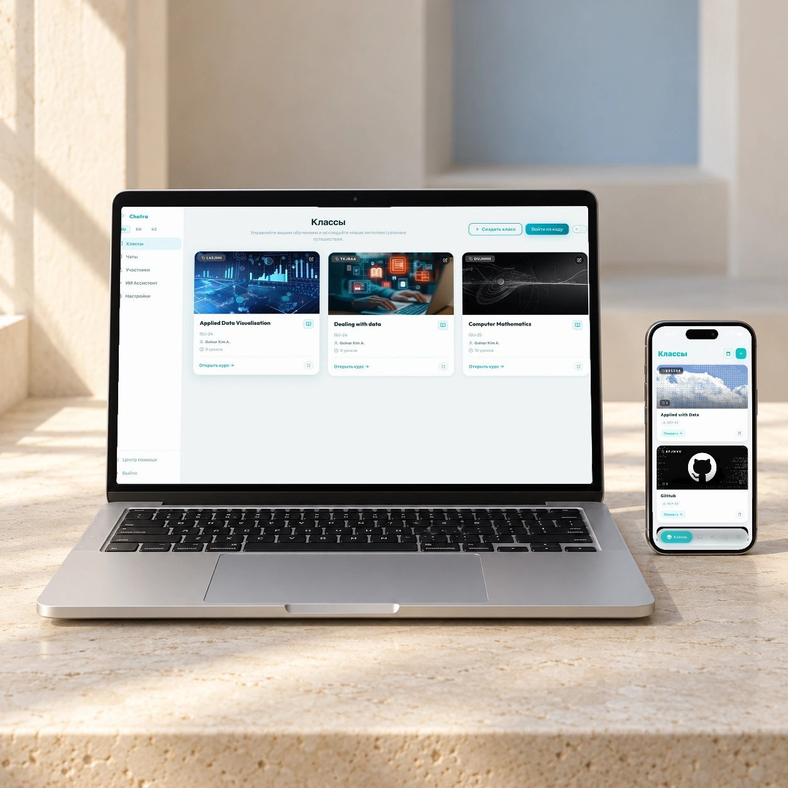

Web & mobile · Education
Chatra
One classroom. Connected everywhere.
A learning platform for students, teachers and administrators, connecting the daily work of a class across web and mobile.
- Classes, assignments, messages, calendars and study tools in one role-aware workspace.
- Nuxt and Flutter clients share a FastAPI service, keeping authentication and learning workflows consistent.
My contribution Frontend, product UI and integration — making a broad set of tools feel like one classroom.
- Nuxt
- Vue
- Flutter
- FastAPI
- PostgreSQL
